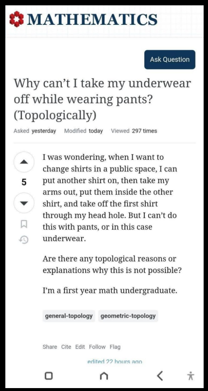

1. The question
Suppose you are wearing underwear underneath a pair of pants. Can you remove the underwear while leaving the pants on? In ordinary life this sounds like a problem about dexterity, elastic waistbands, narrow cuffs, and regrettable decisions. But if we deliberately ignore all metric and mechanical constraints, a cleaner mathematical question appears:

The short answer is no: in the standard idealized configuration there is no topological obstruction. The underwear can, in principle, be deformed off the body and threaded through an opening of the trousers. What makes the maneuver difficult in reality is geometry and mechanics, not topology.
The interesting part is not the answer itself, but how to formulate it rigorously. The problem can be recast in the language of surfaces, free groups, complements, linking invariants, and ambient isotopy.
2. What are we allowed to ignore?
A topological model has to specify what information is being discarded. I will make the following idealizations:
- The garments are infinitely thin, continuously deformable surfaces.
- They may stretch arbitrarily, so lengths, areas, cuff diameters, and elastic limits are ignored.
- The cloth cannot tear and cannot pass through the body.
- The body is replaced by a simple embedded graph representing the pelvis and legs.
- The outer trousers remain present, but their waist and cuffs are genuine boundary openings through which the inner garment may pass.
These assumptions are important. If we impose finite elasticity, finite cuff diameter, friction, fabric thickness, or anatomical joint limits, the answer becomes a problem in geometry and mechanics. Here we ask only whether some continuous deformation exists.
3. Underwear is a pair of pants
Topologists already have a name for the relevant surface: a pair of pants. It is a sphere with three open disks removed,
$$ P = S^2\setminus\left(D_1^\circ\cup D_2^\circ\cup D_3^\circ\right)~. $$
The three boundary components represent the waist opening and the two leg openings. Its Euler characteristic is
$$\chi(P)=2-3=-1~.$$
More useful for us is the fact that a pair-of-pants surface deformation retracts onto a figure-eight graph,
$$P\simeq S^1\vee S^1~.$$
The complicated-looking garment has the homotopy type of two circles joined at one point.
Therefore its fundamental group is the free group on two generators,
$$ \pi_1(P)\cong F_2=\langle a,b\rangle~. $$
We can think of $a$ and $b$ as loops associated with the two leg openings. If $c$ denotes the waist boundary, then with a suitable orientation the three boundary classes satisfy
$$abc=e~,\qquad c=(ab)^{-1}~.$$
Thus the garment has nontrivial topology by itself. The real question, however, is whether these loops become nontrivial because they surround the body.
4. Replace the lower body by a tree
Ignore the detailed shape of the legs and pelvis and replace them by a $Y$-shaped embedded tree $T\subset\mathbb{R}^3$. The two lower branches end at the feet. The upper branch merely anchors the model at the pelvis/torso.
A tree is contractible, but that statement alone is not enough. The garment moves in the space around the body, so the relevant space is the complement
$$X=\mathbb{R}^3\setminus T~.$$
For a standard tame embedded tree, take a sufficiently small regular neighborhood $N(T)$. Because $T$ has no cycles, $N(T)$ is a 3-ball. The complement of the tree has the same homotopy type as the exterior of this regular neighborhood, and that exterior deformation retracts onto a 2-sphere. Hence
$$ \mathbb{R}^3\setminus T\simeq S^2~, \qquad \pi_1(\mathbb{R}^3\setminus T)=0~. $$
This is the first rigorous indication that the underwear is not linked with the body in the way a ring can be linked with an infinite pole or a closed knot.
5. Why the feet — mathematically, the endpoints — matter
To see exactly what changes, replace a leg by an infinitely long line $L$. Then
$$ \mathbb{R}^3\setminus L \cong (\mathbb{R}^2\setminus\{0\})\times\mathbb{R} \simeq S^1~, $$
so
$$\pi_1(\mathbb{R}^3\setminus L)\cong\mathbb{Z}~.$$
A loop going once around the line represents $1\in\mathbb Z$. It cannot be contracted without crossing the line. That is a genuine winding-number obstruction.
A real leg is not an infinite line. Topologically it behaves like a finite arc. A loop around such an arc can slide toward the endpoint and pass over it. The foot is precisely where the would-be winding invariant loses its force.
6. The knot-theory version
Now imagine a more dramatic anatomical modification: suppose the leg closes back on itself and becomes a knot $K\subset S^3$. Then the complement has the knot group
$$G_K=\pi_1(S^3\setminus K)~.$$
Even for the unknot, this group is nontrivial:
$$\pi_1(S^3\setminus K_{\mathrm{unknot}})\cong\mathbb Z~.$$
If the underwear opening is another closed curve $\gamma$, the pair $(K,\gamma)$ can form a genuine two-component link. For closed oriented components we can define the linking number
$$\operatorname{lk}(K,\gamma)\in\mathbb Z~.$$
A Hopf link has $|\operatorname{lk}|=1$, and no ambient isotopy can change that value to zero without one component crossing the other. That is the kind of invariant we would need for a genuinely trapped garment.
But an ordinary leg is an arc, not a closed cycle. Classical linking number is therefore not an invariant of the pair in the same way, and the endpoint provides an escape route.
| Obstacle | Complement, up to homotopy | Fundamental group | What happens to a surrounding loop? |
|---|---|---|---|
| Standard finite tree / leg-like arc | $S^2$ | $0$ | No winding obstruction; the loop can escape over an endpoint. |
| Infinite line | $S^1$ | $\mathbb Z$ | Winding number is conserved; a once-wound loop is trapped. |
| Closed unknot | Solid-torus exterior | $\mathbb Z$ | A meridian is nontrivial; genuine linking can occur. |
7. Alexander duality gives the same message
There is also a compact homological argument. To work in $S^3$, compactify the ambient space and set
$$K=T\cup\{\infty\}\subset S^3~.$$
Alexander duality says
$$ \widetilde H_i(S^3\setminus K) \cong \widetilde H^{\,2-i}(K)~. $$
Since a tree has no first cohomology and adding the isolated point at infinity does not create any, $H^1(K)=0$. Therefore
$$ H_1(\mathbb R^3\setminus T)=0~. $$
So there is no first-homology class that could serve as an ordinary linking or winding number around the body tree. This is weaker than the statement about the fundamental group — $H_1$ only detects the abelianization of $\pi_1$ — but in this standard case both calculations agree.
8. A subtle point: homotopy is not the same as taking the garment off
There is an important logical gap one should not hide. Showing that the loops $a$ and $b$ are null-homotopic does not by itself prove that the entire embedded garment can be removed. A null-homotopy is allowed to collapse a loop through itself, whereas a physical piece of cloth must remain embedded.
The correct notion is an ambient isotopy: a continuous motion through embeddings. In a standard unknotted configuration we can describe such a motion explicitly:
- Slide the underwear downward inside the trousers.
- Move one underwear leg opening toward the corresponding foot.
- Pass that opening over the endpoint of the leg and through the trouser cuff.
- Repeat for the second leg opening.
- Once neither opening surrounds a leg, pull the remaining garment through one of the trouser openings.
No cloth needs to pass through the body. The deformation may require absurd stretching, but topology does not care about that.
What the explicit isotopy adds: in the ordinary unknotted configuration, that absence of linking can actually be realized as a continuous removal of the garment.
9. And what about the outer pants?
So far most of the algebra has focused on the body. Could the outer trousers themselves form a topological cage?
Not in the standard model. The trousers are also a pair-of-pants surface and therefore have three boundary circles. They are not a closed surface like a sphere. The cuffs and waist are actual exits. Once an underwear opening has been slid off a body endpoint, it can be threaded through the corresponding cuff without crossing the trouser fabric.
Whether there is enough room between the foot and cuff is a different question. If a cuff has relaxed circumference $C$, the garment or foot requires an effective circumference $C_f$, and the material can stretch by at most a factor $\lambda_{\max}$, then a crude mechanical condition might be
$$\lambda_{\max}C\ge C_f~.$$
Failure of this inequality can make the maneuver physically impossible, but it is not a topological invariant. It depends on metric size and material response.
10. When would topology genuinely stop you?
The toy problem becomes genuinely topological if we change the rules. Here are several ways to create a real obstruction:
- Make the legs infinite. Then the complement has fundamental group $\mathbb Z$, and a surrounding loop carries a conserved winding number.
- Close a leg into a loop. Now knot groups and linking numbers become available, and a Hopf-like configuration cannot be undone without crossing.
- Fix arc endpoints to a boundary. This leads naturally to tangle theory. An arc that is harmless when its endpoints are free can become nontrivial when the endpoints are held fixed.
- Knot the garment itself. The triviality of the body-complement group rules out linking with the body; it does not magically unknot a garment whose own embedding has been made nontrivial.
This last point is worth emphasizing. The map $F_2\to\pi_1(\mathbb R^3\setminus T)$ being trivial tells us about how the garment winds around the body. It does not classify every possible embedding of the garment. The conclusion of this post concerns the standard, unknotted way people actually wear clothes.
11. Why shirts feel different
The original question is motivated by a familiar observation: changing shirts while keeping another shirt on feels possible, while doing the analogous maneuver with underwear and trousers feels much harder. Topologically, there is no deep distinction. Arms also have endpoints — the hands — so sleeve loops can escape for exactly the same reason that leg loops can escape over the feet.
The difference is overwhelmingly geometric and biomechanical: hands are often easier to pass through sleeves, arms have greater accessible range of motion, trouser cuffs are usually narrower relative to feet, and the lower-body garments constrain one another more strongly.
In other words, everyday intuition is correctly detecting a practical obstruction, but attributing it to the wrong branch of mathematics.
12. The punchline
A ridiculous question has led us through a respectable amount of topology. The underwear is a pair-of-pants surface with
$$\pi_1(P)\cong F_2~,$$
while the complement of a standard finite lower-body tree has
$$\pi_1(\mathbb R^3\setminus T)=0~.$$
Hence the leg-opening generators acquire no nontrivial winding class around the body. Unlike a loop around an infinite line or a closed knot, each loop can be slid over an endpoint. Alexander duality independently tells us that there is no $H_1$ linking class, and an explicit ambient isotopy completes the argument for the standard unknotted configuration.
So, in the ideal world of topology, you can indeed remove your underwear while keeping your pants on. Whether this theorem deserves experimental verification is left to the reader.
References and further reading
- Mathematics Stack Exchange, “Why can't I take my underwear off while wearing pants? (Topologically)” .
- A. Hatcher, Algebraic Topology. Cambridge University Press, 2002. See the chapters on fundamental groups, homology, and duality.
- D. Rolfsen, Knots and Links. Publish or Perish, 1976.
- C. C. Adams, The Knot Book: An Elementary Introduction to the Mathematical Theory of Knots, American Mathematical Society.
If you notice an error, know a cleaner proof, or have another absurd question that secretly contains interesting mathematics, feel free to send me an email.